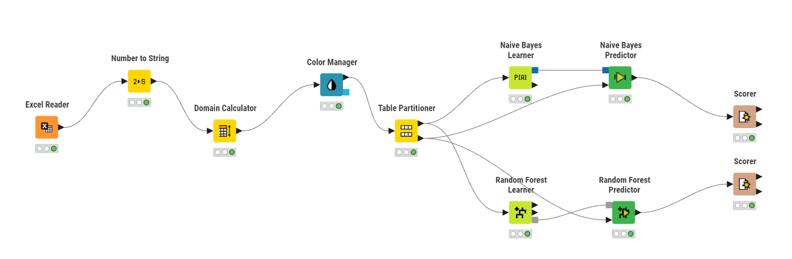
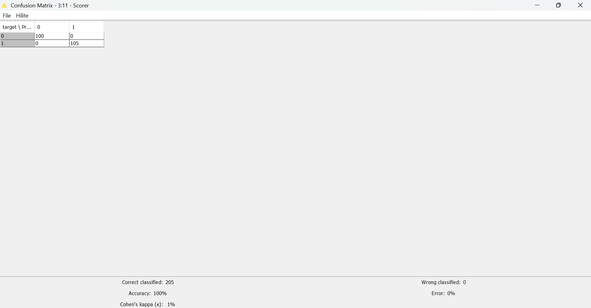
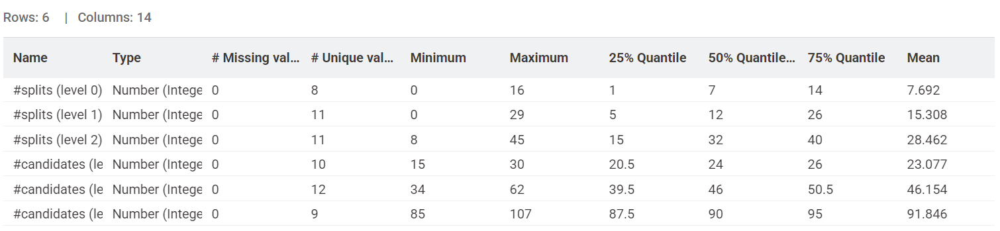
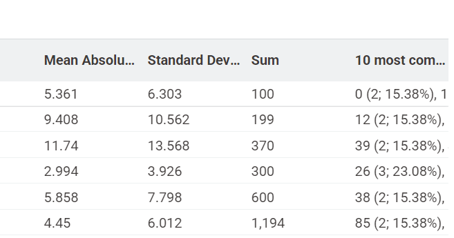
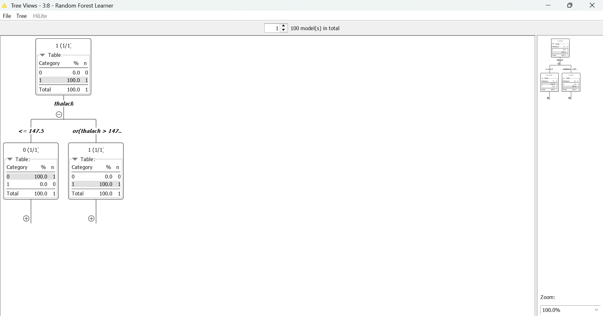

Random Forest#
Analisis Klasifikasi Data Penyakit Jantung menggunakan metode Random Forest dan Naive Bayes pada KNIME#
Random Forest adalah algoritma pembelajaran mesin (Machine Learning) yang menggunakan metode Ensemble Learning. Algoritma ini bekerja dengan membangun banyak Decision Tree (Pohon Keputusan) secara acak pada saat masa pelatihan data (training). Hasil prediksi akhir diambil berdasarkan suara terbanyak dari seluruh pohon yang terbentuk. Jika mayoritas pohon memprediksi “Sakit”, maka hasil akhirnya adalah “Sakit”.
sumber data : https://www.kaggle.com/datasets/johnsmith88/heart-disease-dataset
1. Metodologi#

Eksperimen ini menggunakan alur kerja data mining yang terstruktur untuk mengklasifikasi risiko penyakit jantung. Metodologi yang diterapkan dibagi menjadi beberapa tahapan utama sebagai berikut:1. Data Acquisition (Input Data)#
ahap awal dimulai dengan membaca dataset menggunakan node Excel Reader. Data yang digunakan adalah heart.xlsx yang berisi rekam medis pasien seperti usia, jenis nyeri dada, tingkat kolesterol, dan status penyakit jantung (target).
2.Preprocessing & Data Transformation#
Karena kolom target berisi angka (0 dan 1) sementara algoritma klasifikasi membutuhkan label kategori, maka dilakukan transformasi data:
Number To String: Digunakan untuk mengubah tipe data kolom target dari numerik menjadi string (teks). Tanpa tahap ini, algoritma klasifikasi tidak dapat berjalan karena akan dianggap sebagai data kontinu.
Domain Calculator: Digunakan untuk memperbarui nilai domain pada dataset agar label “0” dan “1” terdefinisi dengan jelas sebagai kategori yang akan diprediksi.
3. Data Visualization (Color Manager)#
Node Color Manager diterapkan untuk memberikan label warna yang berbeda pada setiap kelas (misalnya: warna biru untuk label 0 dan warna merah untuk label 1). Hal ini memudahkan analisis visual pada tahap evaluasi.
4. Data Splitting (Partitioning)#
Dataset dibagi menjadi dua bagian independen menggunakan node Table Partitioner:
Training Data (80%): Digunakan untuk melatih model agar dapat mengenali pola dalam data.
Testing Data (20%): Digunakan untuk menguji performa model dengan data yang belum pernah dilihat sebelumnya guna menjamin objektivitas hasil.
5. Model Training (Learner)#
Pada tahap ini, diterapkan dua algoritma Machine Learning yang berbeda untuk dibandingkan kinerjanya:
Naive Bayes Learner: Mempelajari pola berdasarkan teori probabilitas.
Random Forest Learner: Mempelajari pola dengan membangun sekumpulan pohon keputusan (Ensemble Learning) secara acak untuk meningkatkan stabilitas prediksi.
6. Model Prediction#
Predictor: Node Naive Bayes Predictor dan Random Forest Predictor menerapkan model yang sudah dilatih ke dalam data testing (20%).
Hasil dan Analisis#
Scorer Naive Bayes#
Model Naive Bayes menunjukkan performa sebagai berikut:
Akurasi: 83.415%
Correct Classified: 171 data
Wrong Classified: 34 data
Analisis: Meskipun performanya sudah masuk kategori sangat baik, Naive Bayes masih memiliki tingkat kesalahan sebesar 16.585%. Hal ini dikarenakan keterbatasan algoritma yang mengasumsikan setiap gejala medis berdiri sendiri (independen).
Scorer Random Forest#

Berdasarkan pengujian pada data uji (20% dari total dataset), model Random Forest menunjukkan performa yang sempurna:Akurasi: 100%
Correct Classified: 205 data
Wrong Classified: 0 data
Analisis: Model berhasil mengklasifikasikan seluruh data uji tanpa kesalahan sedikit pun. Hal ini menunjukkan bahwa gabungan banyak pohon keputusan (ensemble) pada Random Forest mampu menangkap seluruh pola fitur medis dalam dataset dengan sangat akurat.
Perbandingan:
Metriks |
Naive Bayes |
Random Forest |
|---|---|---|
Accuracy |
83.415% |
100% |
Correct Classified |
171 |
205 |
Wrong Classified |
34 |
0 |
Random Forest jauh lebih unggul dibandingkan Naive Bayes. Akurasi 100% pada Random Forest membuktikan bahwa metode pohon keputusan jamak sangat efektif untuk kasus klasifikasi penyakit jantung ini, sedangkan Naive Bayes mengalami kesulitan pada beberapa data yang memiliki keterkaitan antar variabel medis.
Atribut Statistic#


Tree View Random Forest#

Gambar ini adalah visualisasi dari salah satu pohon keputusan di dalam model Random Forest. Ini menjelaskan bagaimana mesin “berpikir” dalam mendiagnosa pasien:Akar Masalah (Root): Variabel thalach (detak jantung maksimal) menjadi variabel penentu utama di pohon ini.
Logika Percabangan:
Jika thalach <= 147.5: Pasien diarahkan ke cabang kiri dan diprediksi masuk kategori 0 (Sehat) dengan keyakinan 100%.
Jika thalach > 147.5: Pasien diarahkan ke cabang kanan dan diprediksi masuk kategori 1 (Sakit) dengan keyakinan 100%.
Hasil Akhir (Leaf Nodes): Karena pada kotak hasil akhir tertulis 100%, ini menunjukkan bahwa variabel thalach sangat efektif dalam membedakan antara pasien sehat dan sakit pada dataset ini, yang menjelaskan mengapa akurasi modelmu bisa mencapai 100%.